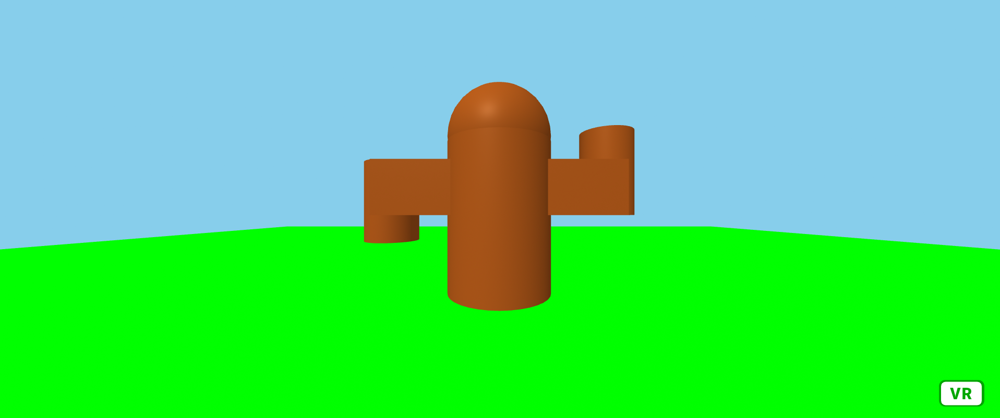

第3週目
3-1 JavaScript体験：VR空間を作る

VR
1.内容
天気が快晴の広大な草原にいるはにわを作成した．球と円柱と立方体を使って作成した．
2.感想
立方体を使わずに球と円柱だけで作ることができればはにわにもう少し丸みを持たせられたが，うまくいかず断念した．円柱の回転のさせ方がわからなかった．また，色コードを見つけることができるとても便利なサイトがあると知った．
3-1 JavaScript体験：伝言プログラムを作る
伝言板
1.内容
伝言板のサイトを作成した．最近のサイトではEnterキー押下で入力を確定できるものがあるが，方法がわからないので，入力したらセットボタンを押してもらうよう指示している．
2.感想
ボタンを作って伝言を残しておく方法が分かった．また，ボタンを押して入力を確定したら入力ボックスの中身が消えるようにした．表示している文字に空白を入れたりする方法を学びたい．
3-2 JavaScriptプログラムの３次元空間の体験
1.内容
3次元空間で立方体や球を動かした．また，球を撃って立方体にあてると跳ね返ることを確認して，当たり判定があることを確かめた．
2.感想
自分も勉強して簡単なシューティングゲームを作成できるようになりたいと思った．インターネットで調べれば自分がわからないコードの書き方を知れるとわかったので，どんどん活用しようと思ったが，自分でも組めるようになりたいと思った．